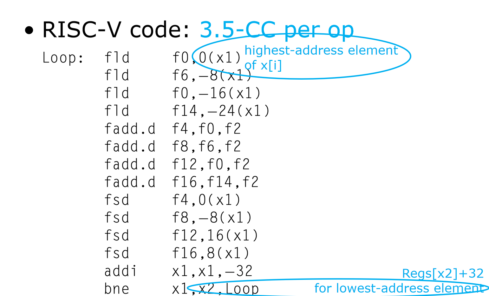
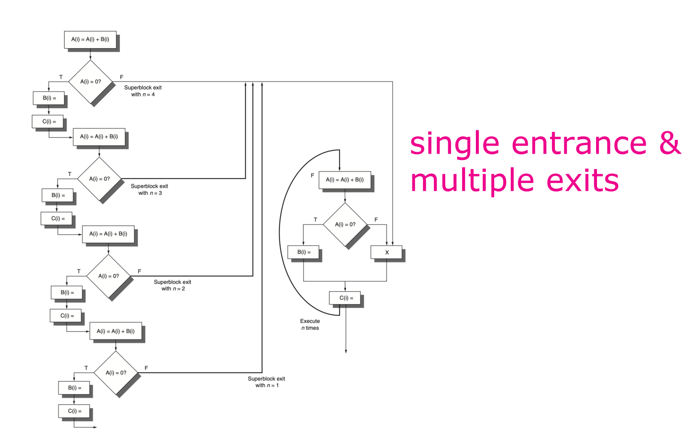

计算机体系结构3-2-2:流水线调度和循环展开
1.4 流水线调度 (Pipeline Scheduling)
流水线调度的核心思想非常朴素：在保证程序逻辑正确的前提下，通过移动指令的位置，来分离相互依赖的指令，从而用独立的指令去填充因数据相关而产生的“空泡（bubbles）”。
- C 语言代码：
for (i = 999; i >= 0; i = i - 1) x[i] = x[i] + s; - 未经优化的 RISC-V 汇编代码：
Loop: fld f0, 0(x1) ; I1: 加载 x[i] fadd.d f4, f0, f2 ; I2: 计算 x[i] + s (s 在 f2) fsd f4, 0(x1) ; I3: 存储新值 addi x1, x1, -8 ; I4: 指针递减 (i--) bne x1, x2, Loop ; I5: 循环判断与跳转
为了分析其性能，我们需要一份功能单元延迟的“价目表”
| 产生结果的指令类型 | 使用结果的指令类型 | 延迟 (个停顿周期) |
|---|---|---|
| FP ALU op | FP ALU op | 3 |
| FP ALU op | Store double | 2 |
| Load double | FP ALU op | 1 |
| Load double | Store double | 0 |
| Integer op | Integer op | 0 |
现在，我们来分析一下未经优化的代码中存在的停顿：
fld->fadd.d：fadd.d需要fld加载到f0的结果。这是一个 Load-use 依赖，延迟为 1 个周期。所以fadd.d必须在fld之后停顿 1 拍。fadd.d->fsd：fsd需要fadd.d计算出的f4。这是一个 FP ALU op -> Store double 依赖，延迟为 2 个周期。所以fsd必须在fadd.d之后停顿 2 拍。addi->bne：这是一个 Integer op -> Integer op (branch test) 依赖，延迟为 0，无停顿。bne：分支指令本身会带来延迟。假设分支在 EX 阶段解析，那么在bne指令之后会有一个分支延迟槽，需要停顿 1 个周期。
总周期计算：
fld(1) + stall(1) + fadd.d(1) + stall(2) + fsd(1) + addi(1) + bne(1) + stall(1 for branch) = 9 个时钟周期。
一个循环迭代需要 9 个周期，而其中只有 5 条是有效指令，性能损失了将近一半！这些停顿就是编译器施展“魔法”的目标。
如何调度？
编译器的目标是找到可以移动的独立指令。观察一下，addi x1, x1, -8 这条指令干了什么？它只是修改了指针 x1。它与核心的浮点计算 (fld, fadd.d, fsd) 有没有关系？
- 它不依赖于
fld或fadd.d的结果。 fld和fsd依赖于x1的旧值，而addi产生的是x1的新值。这是一个读后写（WAR）的名依赖！
编译器意识到，只要在 fld 和 fsd 读取完旧的 x1 地址之后，addi 就可以被执行。因此，一个绝佳的移动机会出现了：将 addi 提前！
- 调度后的代码：
Loop: fld f0, 0(x1) ; I1 addi x1, x1, -8 ; I4' (提前) fadd.d f4, f0, f2 ; I2 fsd f4, 8(x1) ; I3' (偏移量修改) bne x1, x2, Loop ; I5
关键改动：
addi被移动到了fld之后。它完美地填补了fld和fadd.d之间的那个停顿周期！- 一个非常重要的细节：因为
addi提前执行了，当fsd执行时，x1的值已经是x1_old - 8。为了存到正确的位置（原来的0(x1_old)），fsd的立即数偏移量必须被相应地修改为8，即8(x1_new)。这是编译器必须保证的语义等价性。
新代码的性能分析：
fld->fadd.d：addi在中间执行，但fadd.d仍需等待fld的结果，所以它依然需要停顿 1 周期。但是，addi已经在这个周期里执行了，所以这个停顿被有效利用了。fadd.d->fsd：延迟是 2 周期。现在这两条指令之间没有其他指令，所以会产生 2 个周期的停顿。- 分支延迟：仍然存在 1 个周期的停顿。
总周期计算：
fld(1) + addi(1) + fadd.d(1) + stall(2) + fsd(1) + bne(1) + stall(1) = 8 周期。
相比原来的 9 周期，我们通过一次简单的调度就节省了 1 个周期。
还能更好吗？ 我们发现，bne 依赖于 addi 的结果，而它们之间隔着 fadd.d 和 fsd，有足够的时间让 addi 完成。但是，fsd 和 bne 之间仍然没有指令来填充分支延迟槽。
1.5 循环展开 (Loop Unrolling)
流水线调度的效果受限于一个基本块（在这里是循环体）内独立指令的数量。在我们的例子中，5 条指令的循环体内，调度空间非常有限。
如何创造更多的调度机会？答案是：扩大基本块的范围。对于循环，最有效的方法就是循环展开。
- 核心思想：将循环体复制多份（例如 4 份），然后相应地调整循环控制逻辑。
- 带来的好处：
- 减少循环开销：原来执行 4 次迭代需要 4 次
addi和 4 次bne。展开后，我们可以在一个大的循环体里完成 4 次迭代的工作，而只需要 1 次addi(步长变为 -32) 和 1 次bne。循环控制指令在总指令数中的占比急剧下降。 - 创造巨大的指令调度空间：展开后的循环体变成了一个包含大量指令的大基本块。原来属于不同迭代的指令，现在“共处一室”。由于不同迭代间的计算通常是独立的（例如
x[i]的计算和x[i-1]的计算），这为编译器提供了海量的、不相关的指令来进行交叉调度。
- 减少循环开销：原来执行 4 次迭代需要 4 次
让我们展开 4 次：
- 未经调度的展开代码 (逻辑上)
注意：为了避免 WAW 和 WAR 伪相关，编译器必须为每次迭代使用不同的寄存器（
Loop: fld f0, 0(x1) fadd.d f4, f0, f2 fsd f4, 0(x1) ; 第一次迭代 fld f6, -8(x1) fadd.d f8, f6, f2 fsd f8, -8(x1) ; 第二次迭代 fld f10, -16(x1) fadd.d f12, f10, f2 fsd f12, -16(x1) ; 第三次迭代 fld f14, -24(x1) fadd.d f16, f14, f2 fsd f16, -24(x1) ; 第四次迭代 addi x1, x1, -32 bne x1, x2, Loopf0, f6, f10, f14等）。这正是静态的寄存器重命名！
现在，编译器面对的是一个包含 14 条指令的巨大“棋盘”。它可以进行如下的极限调度：
- 调度后的展开代码
Loop: fld f0, 0(x1) ; 1. 先把所有加载指令放在一起 fld f6, -8(x1) fld f10, -16(x1) fld f14, -24(x1) fadd.d f4, f0, f2 ; 2. 然后放所有加法，它们分别依赖上面的加载 fadd.d f8, f6, f2 fadd.d f12, f10, f2 fadd.d f16, f14, f2 fsd f4, 0(x1) ; 3. 然后放所有存储，它们依赖加法结果 fsd f8, -8(x1) addi x1, x1, -32 ; 4. 把循环控制指令藏在存储指令的延迟槽里 fsd f12, -16(x1) bne x1, x2, Loop fsd f16, -24(x1) ; 5. 把最后一条存储指令放在分支延迟槽中
性能分析：
- 四个
fld可以背靠背地发射（假设访存单元是流水化的）。 - 第一个
fadd.d f4,f0,f2必须等待fld f01 个周期。但在这 1 个周期里，其他三个fld正在执行。 - 四个
fadd.d之间没有依赖，可以背靠背发射。 - 第一个
fsd f4,0(x1)必须等待fadd.d f42 个周期。但这期间，其他fadd.d和fsd正在执行。
通过这种精妙的重排，指令间的延迟被其他独立指令完美地隐藏了。原来每个迭代需要 9 周期，4 个迭代需要 36 周期。现在，14 条指令，加上最初的 fld->fadd 停顿和 fadd->fsd 的停顿，总周期数可能只需要 14 + 1 + 2 = 17 周期左右（这是一个粗略估算，精确值需要画时序图）。每个迭代的平均周期从 9 降到了 $17/4 \approx 4.25$！性能提升超过一倍。
循环展开的权衡：
- 优点：极大地提升了 ILP，降低了循环开销。
- 缺点：
- 代码体积膨胀 (Code Size Increase)：可能会导致指令缓存（I-Cache）的命中率下降。
- 寄存器压力 (Register Pressure)：需要更多的寄存器来支持重命名，如果寄存器不足，反而会因为需要将值存入/取出内存（spilling）而降低性能。
1.6 超越基本块：Trace Scheduling 与 Superblock
循环展开非常适合于结构简单的循环。但如果代码中充满了复杂的 if-else 结构呢？

- 挑战：传统的编译器一次只能在一个**基本块（Basic Block）**内进行调度。基本块是以跳转指令结束、没有跳转指令进入的连续指令序列。
if语句会把代码切分成多个小基本块，调度空间很小。 - 洞察：根据程序的动态行为，某些执行路径被执行的概率远高于其他路径。例如，一个错误处理分支可能 99% 的时间都不会被走到。
- Trace Scheduling (踪迹调度)：
- 踪迹选择 (Trace Selection)：通过性能分析（Profiling）或启发式规则，找出程序中最可能被执行的路径，这个路径被称为“踪迹（Trace）”。
- 踪迹压紧 (Trace Compaction)：将这个踪迹上的所有指令视为一个大的基本块，进行积极的指令调度，就好像那些小概率的分支不存在一样。
- 修复代码 (Fix-up Code)：为了保证逻辑的正确性，对于那些从踪迹中间“跳出”（trace exit）或“跳入”（trace entrance）的控制流，编译器需要生成额外的“修复代码”来补偿和纠正因为调度而打乱的状态。
- Superblock (超块)：Trace Scheduling 的一个改进。它通过**代码复制（Tail Duplication）**来消除所有“跳入”踪迹中间的边，使得超块只有一个唯一的入口，但可以有多个出口。这简化了调度过程，因为编译器不必担心有控制流会“半路杀入”一个已经被重排过的指令序列。
